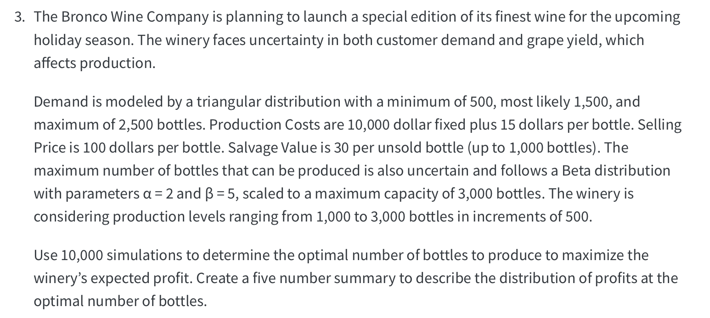

library(extraDistr)
library(tidyverse)
library(gt)
rm(list=ls())
# Part 1: Demand modeled by a Triangular Distribution
min <- 500
mode <- 1500
max <- 2500
# Part 2: Supply modeled by a Beta Distribution
alpha <- 2
beta <- 5
max_capacity <- 3000The Bronco Wine Company
To solve this problem using simulation it’s important to identify the inputs, the objective, make some calculations to arrive to your objective, and use repetitions so that the solution is stable.
Start by including all the inputs provided by the problem in your R code.
In particular, the demand is modeled using the triangular distribution with minimum of 500, maximum of 2500 and mode of 1500.
The number of bottles the company can supply in any given period is uncertain. The supply is modeled using the beta distribution with an alpha of 2 and beta of 5. This number provides a percentage of max production
The max production capacity for the winery is 3000 bottles.
Make sure to also include the costs of production for your simulation.
Now start your simulation by setting the number of simulations you want to generate. Modern computers can handle several simulations. So don’t be afraid to ramp this up as it ensures our results are stable.
The production targets you want to test.
And an empty vector to collect the profits generated by each production target suggested.
Now set a for loop to test all of your production target and begin your simulation.
Each variable included in the tibble generates a column of values, where each row has a simulated value.
For example this line of code generates a column with simulated demands from the triangular distribution.
And this one compares the target production with the max capacity for the winery in a given period, and returns the minimum.
At the end of the loop make sure you add the mean profit to your vector of profits.
With the results in your profits vector, you can now create a table with the mean profits for each production target.
And calculate quartiles for your simulation
nsim <- 1000000
production_targets <- seq(1000, 3000, by = 500)
profits<-c()
# simulation
for (i in production_targets){
simulation<-tibble(
demand=round(rtriang(nsim,min,max,mode),0),
max_production=round(rbeta(nsim,alpha,beta)*3000,0),
actual_production = map2_dbl(.x = max_production,
.y = i,
.f = ~ min(.x, .y)),
units_sold = map2_dbl(.x = demand,
.y = actual_production,
.f = ~ min(.x, .y)),
leftover_units = map2_dbl(.x = actual_production,
.y = units_sold,
.f = ~ max(.x-.y, 0)),
revenue = units_sold * selling_price,
production_cost = fixed_cost + actual_production * variable_cost,
salvage_revenue = map2_dbl(.x = leftover_units,
.y = 1000,
.f = ~ min(.x, .y)*salvage_value),
profit=revenue-production_cost+salvage_revenue)
profits=c(profits,mean(simulation$profit))
}| production_targets | profits |
|---|---|
| 1000 | 50504.02 |
| 1500 | 57706.56 |
| 2000 | 58775.97 |
| 2500 | 58850.35 |
| 3000 | 58800.82 |
0% 25% 50% 75% 100%
-9830 31140 56300 83330 200685 